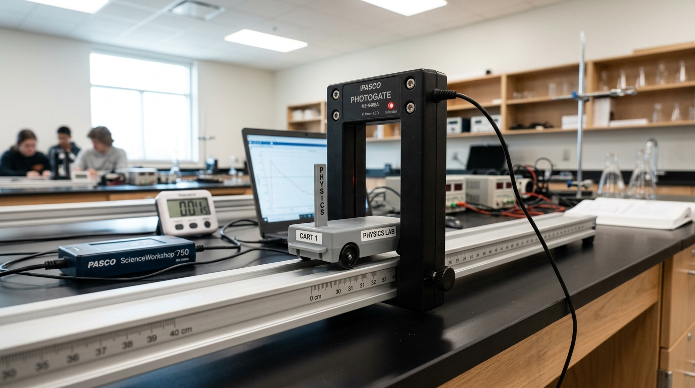
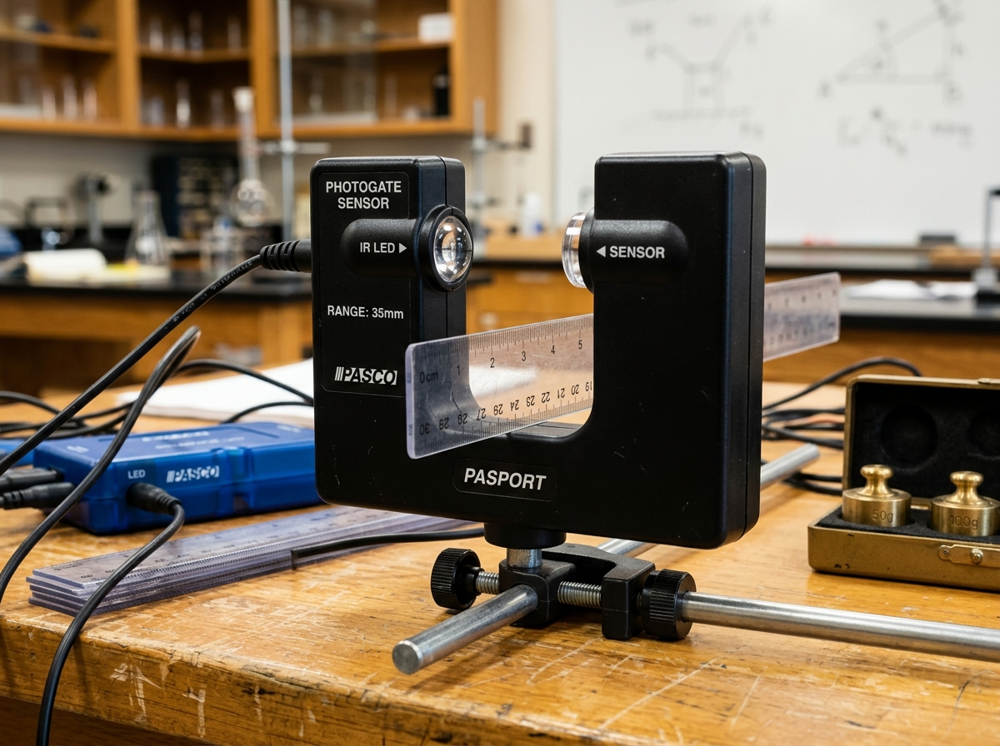
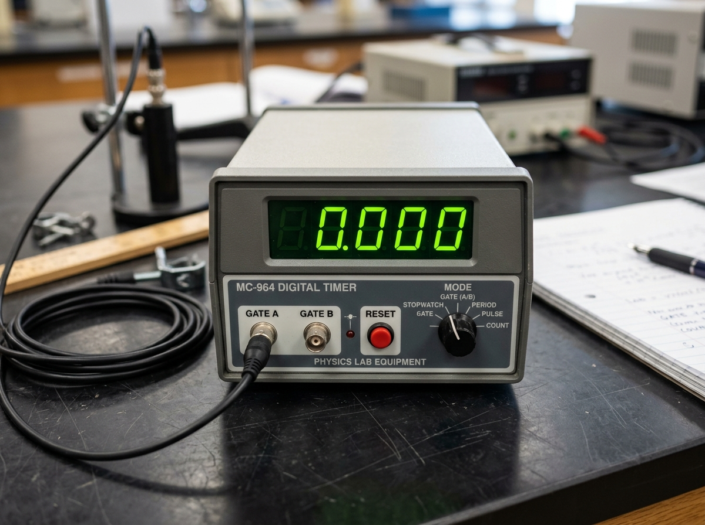
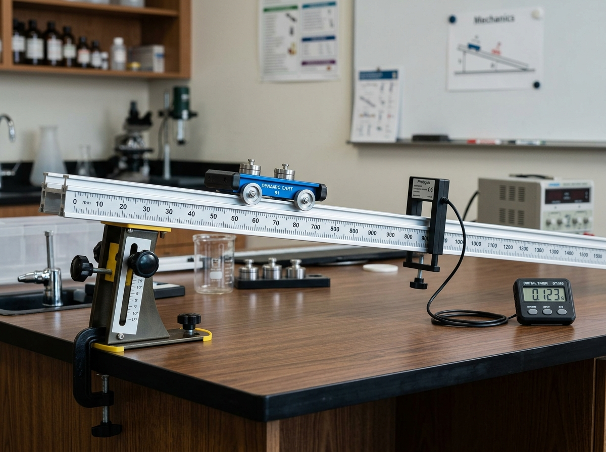
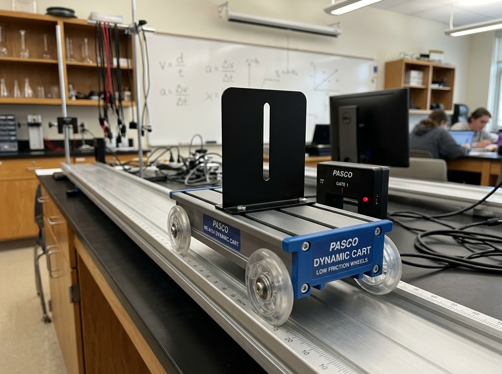

Bài 6: Thực Hành: Đo Tốc Độ Của Vật Chuyển Động

Nguyên lý cảm biến quang học: Cổng quang điện đo thời gian ngắt chùm tia hồng ngoại với độ chính xác đến 0,001 giây
NỘI DUNG BÀI HỌC (CHUẨN SÁCH GIÁO KHOA)
I. Dụng Cụ Thí Nghiệm
Bộ dụng cụ thực hành đo tốc độ của vật chuyển động bao gồm các thiết bị chính sau:
Là thiết bị cảm biến quang hình chữ U. Một nhánh chứa đi-ốt phát ra chùm tia hồng ngoại, nhánh đối diện chứa mắt thu quang bán dẫn. Khi tấm chắn sáng đi qua khe chữ U, chùm tia hồng ngoại bị ngắt quãng, cổng quang lập tức phát tín hiệu điện điều khiển đồng hồ hiện số đếm thời gian.

Đồng hồ điện tử chính xác đến $0,001\text{ s}$ (thang $9,999\text{ s}$) hoặc $0,01\text{ s}$ (thang $99,99\text{ s}$). Mặt trước có các cổng cắm Cổng A, Cổng B, núm gạt chọn chế độ hoạt động (MODE) và nút bấm RESET để đưa số chỉ về $0,000$.

Các chế độ làm việc chính của Đồng hồ hiện số:
• MODE A: Đo khoảng thời gian vật chắn qua cổng quang điện A (dùng đo tốc độ tức thời).
• MODE B: Đo khoảng thời gian vật chắn qua cổng quang điện B.
• MODE A $\leftrightarrow$ B: Đo khoảng thời gian vật di chuyển từ cổng quang điện A đến cổng quang điện B (dùng đo tốc độ trung bình).
• MODE T: Đo khoảng thời gian giữa hai lần liên tiếp vật đi qua cổng quang điện.
Máng trượt bằng hợp kim nhôm định hình, có gắn dải thước thẳng chia độ đến từng milimét ($1\text{ mm}$) và chân đế điều chỉnh góc nghiêng để xác định chính xác quãng đường chuyển động của xe.

Xe lăn chuyển động nhẹ nhàng, ít ma sát trên máng. Trên thân xe có gắn tấm chắn sáng hình chữ nhật có bề rộng $d$ xác định (thường chọn $d = 10\text{ mm} = 0,01\text{ m}$ hoặc $d = 20\text{ mm} = 0,02\text{ m}$).

II. Thiết Kế Phương Án Thí Nghiệm
Để đo tốc độ chuyển động của vật, ta xây dựng hai phương án thực nghiệm tương ứng với hai loại tốc độ:
Để đo tốc độ trung bình của xe lăn chuyển động trên đoạn đường từ vị trí A đến vị trí B, ta cần:
• Đo quãng đường $s$ giữa cổng quang điện A và cổng quang điện B bằng thước thẳng chia độ trên máng.
• Đo khoảng thời gian $\Delta t$ xe chuyển động từ cổng A đến cổng B bằng đồng hồ hiện số cài đặt ở chế độ MODE A $\leftrightarrow$ B.
Để đo tốc độ tức thời của xe tại vị trí đặt cổng quang điện A, ta sử dụng tấm chắn sáng có bề rộng $d$ rất nhỏ:
• Đo bề rộng $d$ của tấm chắn sáng gắn trên xe bằng thước kẹp hoặc thước thẳng chia đến milimét.
• Đo khoảng thời gian $t$ tấm chắn sáng ngắt chùm tia hồng ngoại qua cổng quang A bằng đồng hồ hiện số ở chế độ MODE A.
• Vì độ rộng $d$ rất nhỏ nên khoảng thời gian $t$ rất ngắn, tốc độ trung bình trong khoảng thời gian này được coi xấp xỉ bằng tốc độ tức thời tại A.
III. Tiến Hành Thí Nghiệm
Phòng thí nghiệm ảo: Bài 6 - Thực hành Đo tốc độ chuyển động
Trực tiếp điều chỉnh góc nghiêng máng trượt, kéo thả vị trí cổng A - B, thả xe và tự động xử lý bảng số liệu sai số SGK Trang 31, 32.
1. Thí nghiệm 1: Đo tốc độ trung bình của xe chuyển động
Bố trí máng nghiêng một góc nhỏ so với phương ngang để xe có thể tự lăn xuống. Cố định cổng quang điện A và cổng quang điện B trên máng.
Xác định vị trí cổng A ($s_A$) và cổng B ($s_B$) trên thước đo của máng để tính quãng đường $s = s_B - s_A$.
Nối cổng A và B vào các cổng cắm tương ứng trên đồng hồ. Cắm nguồn, gạt núm chọn chế độ sang MODE A $\leftrightarrow$ B, nhấn nút RESET để số chỉ về $0,000$.
Đặt xe tại vị trí xuất phát cố định ở đỉnh máng, thả xe lăn không vận tốc đầu. Ghi nhận thời gian $\Delta t$ trên đồng hồ.
Nhấn RESET và thực hiện lặp lại phép đo 3 đến 5 lần với cùng vị trí xuất phát và quãng đường $s$.
Bảng số liệu 6.1: Kết quả đo tốc độ trung bình
| Lần đo | Quãng đường $s\text{ (m)}$ | Thời gian $\Delta t\text{ (s)}$ | Tốc độ trung bình $v_{tb}\text{ (m/s)}$ |
|---|---|---|---|
| 1 | $0,500$ | $0,820$ | $0,610$ |
| 2 | $0,500$ | $0,800$ | $0,625$ |
| 3 | $0,500$ | $0,780$ | $0,641$ |
| Trung bình | $\bar{s} = 0,500$ | $\overline{\Delta t} = 0,800$ | $\bar{v}_{tb} = 0,625$ |
2. Thí nghiệm 2: Đo tốc độ tức thời của xe chuyển động
Sử dụng cổng quang điện A để đo tốc độ tức thời của xe tại vị trí cổng A.
Dùng thước kẹp hoặc thước chia độ chính xác đo độ rộng $d$ của tấm chắn sáng gắn trên xe (ví dụ $d = 20\text{ mm} = 0,020\text{ m}$).
Gạt núm chọn chế độ của đồng hồ hiện số sang MODE A, nhấn nút RESET để số chỉ về $0,000$.
Thả xe từ vị trí xuất phát cố định để xe lăn qua cổng quang điện A. Ghi lại khoảng thời gian ngắt sáng $t$ hiển thị trên đồng hồ.
Nhấn RESET và lặp lại phép đo 3 đến 5 lần với cùng vị trí thả xe ban đầu.
Bảng số liệu 6.2: Kết quả đo tốc độ tức thời
| Lần đo | Độ rộng tấm chắn $d\text{ (m)}$ | Thời gian chắn sáng $t\text{ (s)}$ | Tốc độ tức thời $v\text{ (m/s)}$ |
|---|---|---|---|
| 1 | $0,020$ | $0,041$ | $0,488$ |
| 2 | $0,020$ | $0,040$ | $0,500$ |
| 3 | $0,020$ | $0,039$ | $0,513$ |
| Trung bình | $\bar{d} = 0,020$ | $\bar{t} = 0,040$ | $\bar{v} = 0,500$ |
IV. Xử Lý Kết Quả Thí Nghiệm
Giá trị trung bình của tốc độ được tính bằng công thức:
Trong đó $\bar{s}, \bar{d}$ là giá trị trung bình của quãng đường và $\bar{t}$ là giá trị trung bình của thời gian qua $n$ lần đo.
• Sai số tuyệt đối ngẫu nhiên: Tính giá trị trung bình của các sai số tuyệt đối trong các lần đo:
• Sai số dụng cụ ($\Delta s_{dc}, \Delta t_{dc}$): Lấy bằng một độ chia nhỏ nhất hoặc một nửa độ chia nhỏ nhất của dụng cụ đo (thước thẳng và đồng hồ hiện số).
• Sai số tỉ đối của tốc độ:
• Sai số tuyệt đối của phép đo tốc độ: $\Delta v = \bar{v} \cdot \delta v$.
Kết quả đo tốc độ chuyển động được ghi theo quy chuẩn:
• Ưu điểm của phương pháp: Việc kết hợp cổng quang điện với đồng hồ đo thời gian hiện số giúp loại bỏ hoàn toàn sai số do phản xạ trễ của con người (thường từ $0,1\text{ s} - 0,2\text{ s}$ khi bấm tay), mang lại độ chính xác rất cao.
• Các yếu tố gây sai số: Góc đặt cổng quang điện chưa vuông góc với phương chuyển động, độ dốc máng nghiêng thay đổi trong quá trình đo, hoặc lực cản ma sát giữa bánh xe và mặt phẳng nghiêng.
• Biện pháp khắc phục: Đặt cổng quang thẳng hàng, cố định chắc chắn máng nghiêng, kiểm tra độ cân bằng và thực hiện phép đo lặp lại nhiều lần để lấy giá trị trung bình.
📌 Tốc độ trung bình: $v_{tb} = \frac{s}{\Delta t}$ (đo khoảng cách $s$ giữa hai cổng A, B và chọn đồng hồ ở chế độ MODE A $\leftrightarrow$ B).
📌 Tốc độ tức thời: $v = \frac{d}{t}$ (đo độ rộng tấm chắn sáng $d$ và chọn đồng hồ ở chế độ MODE A).
📌 Biểu diễn kết quả: $v = \bar{v} \pm \Delta v\text{ (m/s)}$.